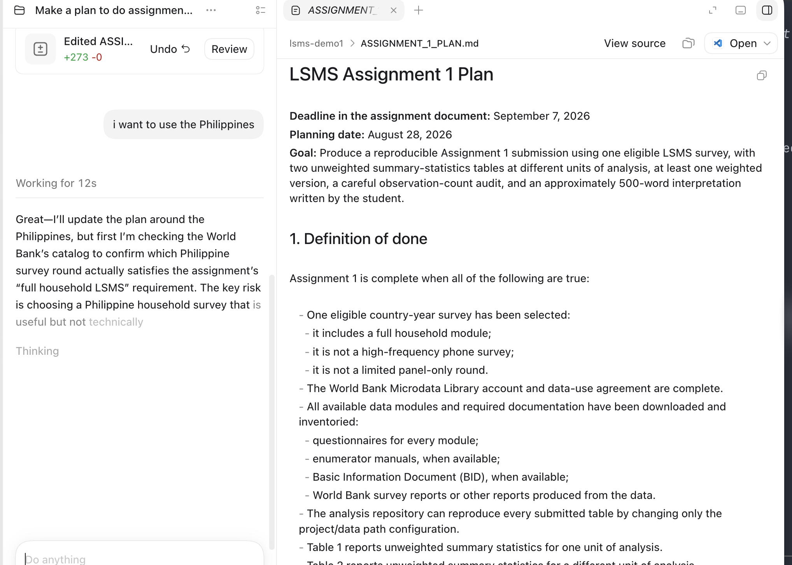
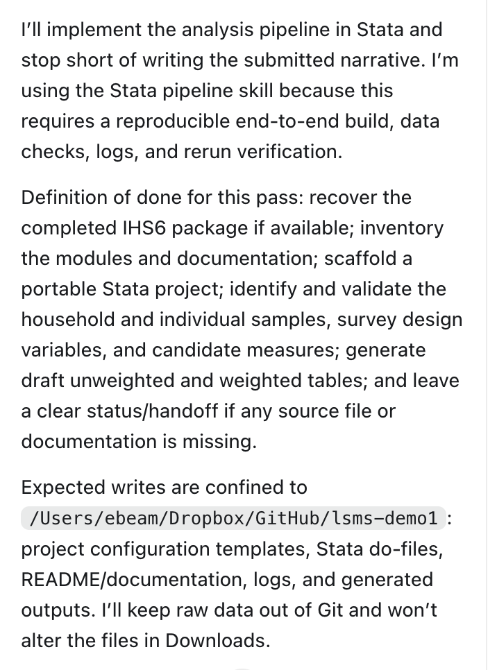
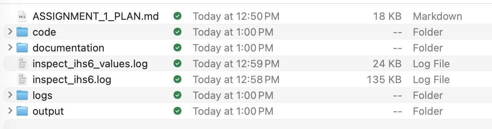
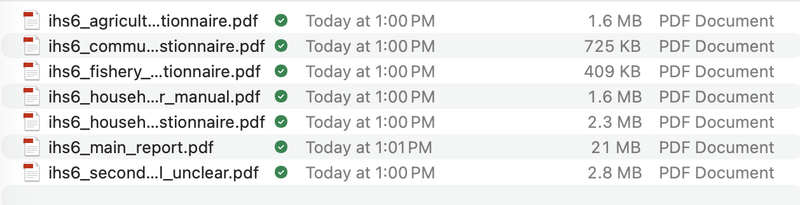
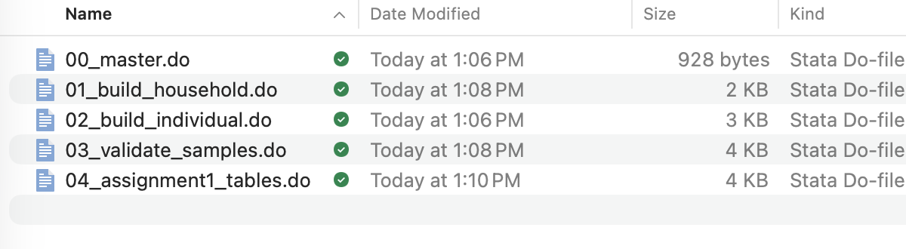
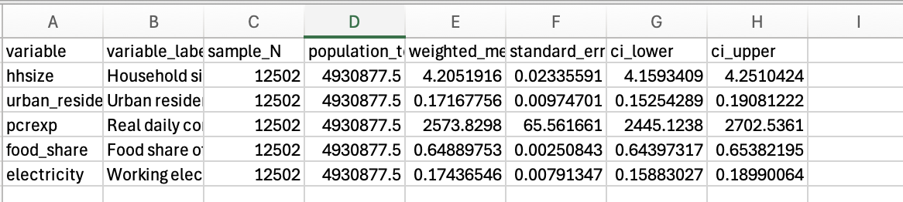
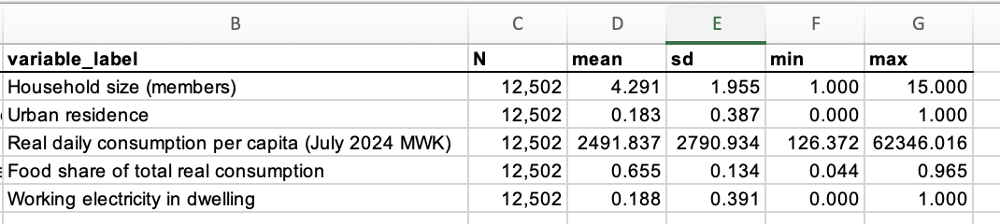
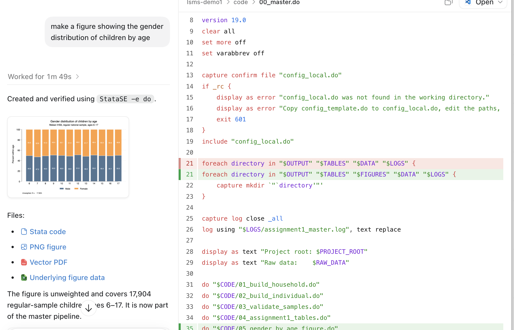
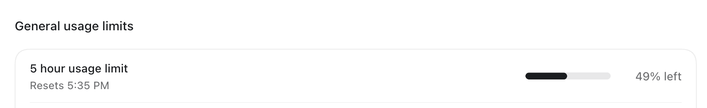
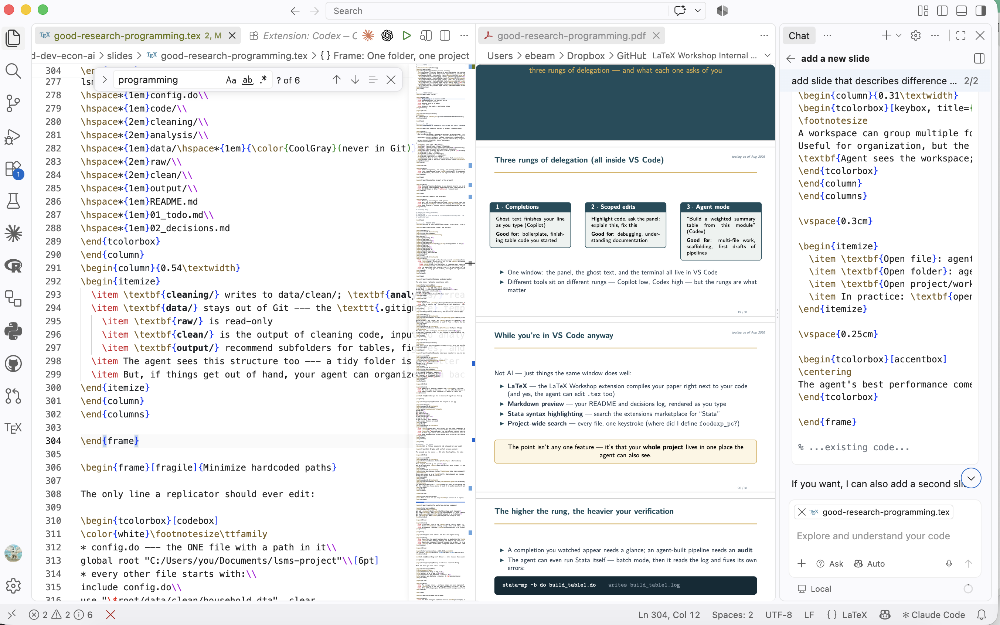

Captured Aug 28, 2026, 12:42–1:31 PM · copied from ~/Dropbox/Screenshots
into umd-dev-econ-ai/slides/figures/
Nine numbered shots run the walkthrough in slide order (06 and 07 share one slide as a before/after pair). Click any image for full size; notes boxes are scratch only and don't save.

You say “i want to use the Philippines”; the agent doesn't just comply — it goes to check the World Bank catalog first, because the risk is picking a survey that's useful but not technically a full household LSMS. The beat: the agent pushes back before it builds.

The agent states what it will do, what “done” means, and — critically — that writes are confined to the project folder, raw data stays out of Git, and Downloads won't be touched. The beat: bounded blast radius, declared up front.

Finder: code/, documentation/, logs/, output/, the plan file, and inspection logs — the folder structure from the deck, built automatically. The beat: it produced the layout you teach.

Every IHS6 questionnaire, the enumerator manual, and the main report, downloaded and inventoried before any analysis runs. The beat: it read the documentation first — the step students skip.

00_master → 01_build_household → 02_build_individual → 03_validate_samples → 04_assignment1_tables. The beat: a real pipeline, not one 400-line do-file.

Survey-weighted means with population totals, standard errors, and confidence intervals — machine-readable, ugly on purpose. The beat: the survey design was actually used.

Same numbers, labeled and rounded: N, mean, sd, min, max, with readable variable labels. The beat: pair with 06 as a before/after on the same slide.

“Make a figure showing the gender distribution of children by age” → chart built and verified with StataSE -e do, and the diff shows $FIGURES added to the directory loop plus 05_gender_by_age_figure.do wired into the master. The beat: the ask changed the pipeline, not just the output — the closer.

The 5-hour usage window, checked mid-session. The beat: agent mode spends a budget, and an unattended run spends it fast — plan first, because a good plan is cheap and a wrong build is expensive.

Three-up: good-research-programming.tex, the live PDF, and the agent writing the “three rungs of delegation” slide. This is the deck building itself, not the LSMS demo — it belongs on the “while you're in VS Code anyway” slide. The beat: one window, and the agent edits your .tex too.